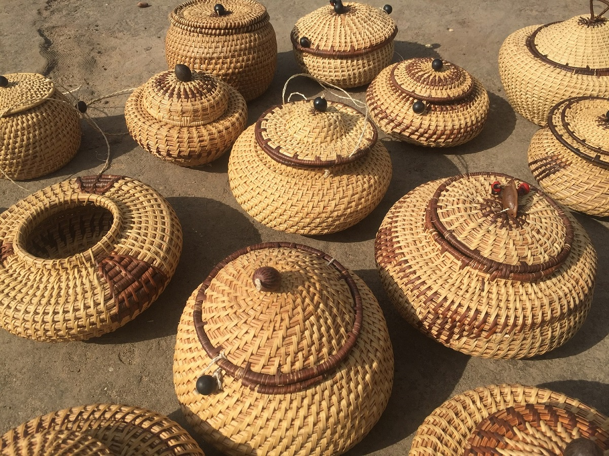
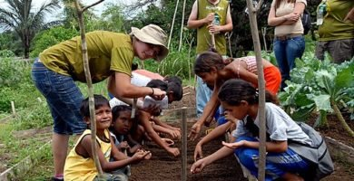
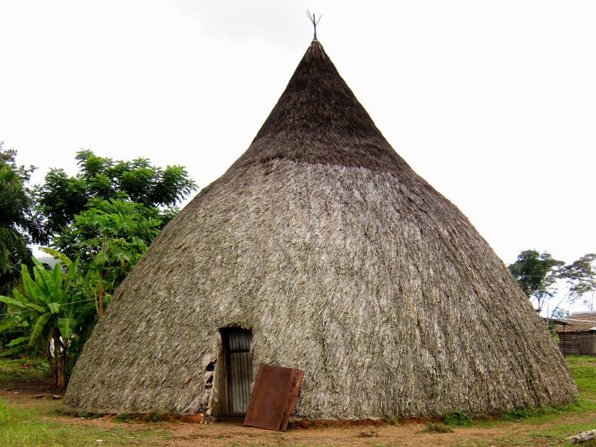

La producción artesanal de los wótjüja (piaroa, dearuwa) es amplia y responde a las necesidades domesticas del día a día y a las normas que marcan la realización de las ceremonias ancestrales, eventos muy importantes en la existencia de los individuos y la comunidad wótjüja.
Los artesanos se adiestran a través de la convivencia cotidiana y se pulen en el continuo desempeño. Trabajan con la materia prima que les ofrece la selva con las palmas de cucurito y seje hacen una enorme variedad de cestería. Con la madera que deja el aclarado de las parcelas agrícolas fabrican utensilios de uso diario. Con las resinas y colorantes vegetales elaboran los tintes, que junto con las plumas les sirven para adecuar sus piezas a los mandatos legendario y con el bambú hacen flautas
En la sociedad piaroa, el conuco la caza, la pesca y la recolección son las principales actividades de producción. La caza es aprovechada en los tiempos de sequía. Según Johannes Wilbert los wótjüja practicaban, al final de la década de 1960, la pesca extensiva actividad que se tomaba dificultosa cuando se encontraban en etapa de lluvia. Para esta actividad siguen usando el arpón el arco y la flecha.
Durante a estación seca, los piaroas practican intensamente la raza y la pesca abandono las casas comunales para adentrarse dispersamente en las zonas más de la selva. Pescan principalmente tres tipos de peces el bocón, el morocoto y el valentón. Existe una larga lista de animales cazadas por los wótjüja, entre los que destacan el araguato, el cachicamo, el chiguire, la lapa, varios tipos de monos y el picure.
En la selva los piaroas recolectan una gran variedad de frutas silvestres. La mayoría de estos alcanza la madurez en la etapa lluviosa cuando los conucos solo pueden ofrecer yuca. En esta fase de recolección también entran una gran cantidad de insectos y culebras. Algunos de los frutos silvestres comestibles que recolectan los wótjüja son: manaca, monche, seje, cororba, cucurito, altagraca y jigua.
La agricultura fue la actividad productiva que favorece el asentamiento de los wótjüja, siendo la yuca, el ñame, el cambur, la piña, la batata y el algodón algunos de los productos mas consumidos por los habitantes de este pueblo. Los piaroas suelen reunirse en huertas familiares, las cuales son desarrolladas alrededor de los primeros conucos de un asentamiento. Dichas huertas pueden durar hasta diez años y en ellas siembran algodón, tabaco, aji, onoto y algunas alucinogenos
Las investigaciones relacionadas con el pueblo wótjüja (dearuwa, piaroa) aseguran que hasta hace apenas 30 años, hasta mediados de los años 70 del siglo XX, las familias residían exclusivamente en el tipo de construcción concebida por los criollos como “la típica churuata indígena”: un cono de dimensiones y aspecto espectaculares logrado a partir de una muy bien calculada estructura de palos amarrados con bejucos.
Desde la base hasta la cima, un cobertor de palma con ventanas basculantes protege a sus moradores tanto de la intemperie como de la mirada y de las acciones de los forasteros. En el pasado, estas aberturas sirvieron para mucho que el dejar pasar la luz y el viento: a través de ellas los wótjüja vigilaban y se defendían de los enemigos.
Antes y ahora la casa ancestral era y sigue siendo el reflejo de la avanzada tecnología y de la cultura material wótjüja. Pero es también testimonio de aspectos menos palpables como el valor de la familia, el sistema de parentesco, la constitución social, su organización para la subsistencia y, sobre todo, su intensa vida religiosa. Más allá de su función utilitaria la vivienda es prueba irrefutable de la relevancia del ruwa o shamán en la existencia individual y comunitaria.
